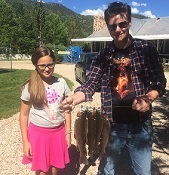
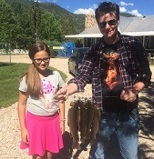
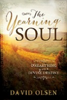
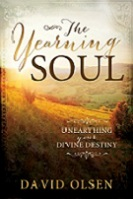

Read Some of My Writing
You can read some of my writings here.
Bingo was a Good Dog -- Children Stories about our dog Bingo
Caroline Meets the Lion -- A children's novel
Depths of Man -- An essay on the psychological depths of humanity

My home is Highland, Utah.
Here's a fun look at my life and accomplishments as a husband, father, president of a marketing company, author, and donut shop owner. More like Forrest Gump than the hero's journey, I can say with Forrest that life's "like a box of chocolates because you never know what you're going to get" and the randomness of life does make it seem at times like your life and destiny is a feather toss about in the wind -- although at times there seems a vague purpose about it.
I am a proud husband and father of five wonderful children who were track stars and debate champions, and excel at everything from aerospace to history to technology. We've also had a black lab named Bingo, and now have a white lab named Bear that lives with us and likes to get into mischief. We enjoy cruise ships and barbecues on the deck in the backyard in the shadows of Mt. Timpanogos where we like to hike and play. We are also close to sundance ski resort, which has nice hiking as well. We enjoy traveling to New York City and places of historical interest, as well as soaking up the sun in Florida and the Caribbean.

 

 I enjoy hiking with my dog Bear to explore the Utah mountains. Bear likes to chase moose until they stand their ground and charge back.
We like to hike through the Unita Mountains and up to Mt. Timpanogos. The views of the mountain peaks, rivers, and meadows with wildflowers are breathtaking.
I enjoy hiking with my dog Bear to explore the Utah mountains. Bear likes to chase moose until they stand their ground and charge back.
We like to hike through the Unita Mountains and up to Mt. Timpanogos. The views of the mountain peaks, rivers, and meadows with wildflowers are breathtaking.
I also enjoy writing about the mystical meaning and axis mundi of life. I especially enjoy Carl Jung and Joseph Campbell. I guess you could say I'm trying to make sense of this colorful, pulsating life all around us. “Life has its own hidden forces which you can only discover by living,” – Soren Kierkegaard
As a writer I've been fortunate to have several books published. The Words You Should Know has sold more than 650,000 copies. Other titles in the series include:

 

You can read some of my writings here.
Bingo was a Good Dog -- Children Stories about our dog Bingo
Caroline Meets the Lion -- A children's novel
Depths of Man -- An essay on the psychological depths of humanity
I received two degrees from Brigham Young University. After receiving my master's degree I was offered a job at the E. Bruce Harrison Agency in Washington, DC -- a marketing and lobbying firm located two blocks from the White House.